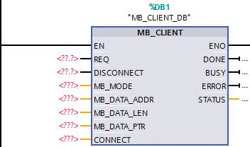
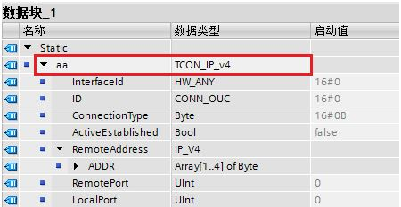
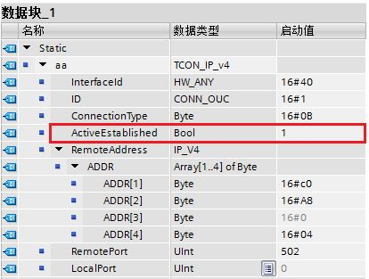
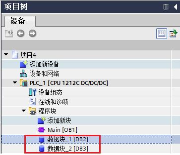
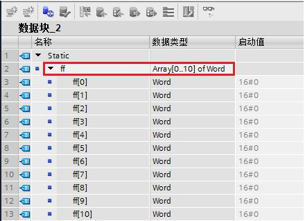
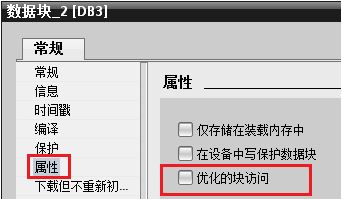
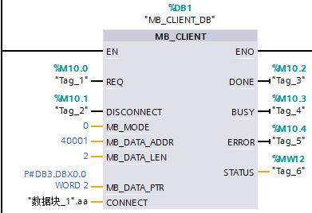
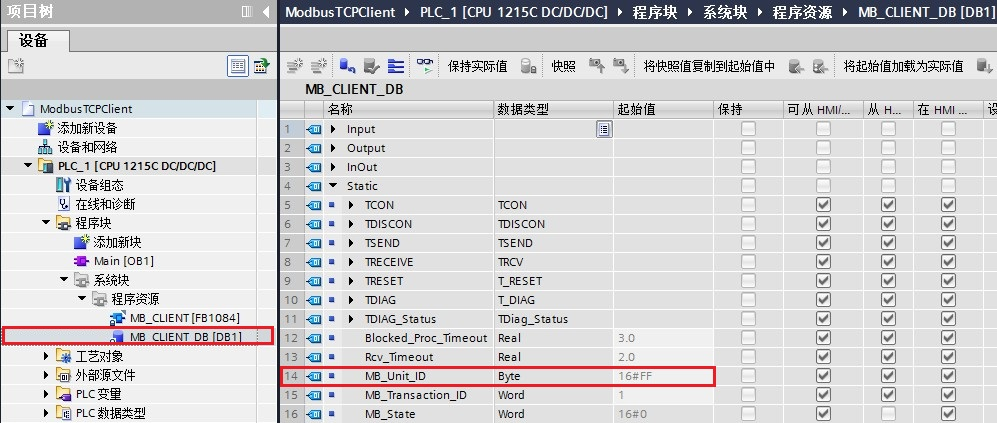
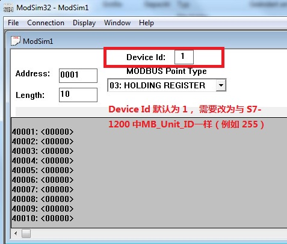

STEP 7 V13 SP1 软件版本中的 Modbus TCP 指令目前最新的版本已升至 V4.0，如图 1 所示。该版本的使用需要具备以下两个条件：
1. 软件版本：STEP 7 V13 SP1 及其以上
2. 固件版本： S7-1200 CPU 的固件版本 V4.1 及其以上
图 1. Modbus TCP V4.0 版本指令块
V4.0 作为 Modbus TCP 新版指令的第一个基础版本，后续版本新增内容参见：
V4.0 版本 Modbus TCP 服务器文档参见链接。
旧版指令主要应用于固件版本 V4.0 及其以前的 CPU：
下面以两台 S7-1200 之间进行 Modbus TCP 通信为例，详细阐述客户端与服务器侧如何编程及通信的过程，本文档只介绍客户端部分组态编程，服务器部分参见链接。
表 1 列出了具体的实验环境，表 2 列出了双方 CPU 通信所需主要参数。
| 操作系统 | WIN7 SP1 专业版 64 位 |
编程软件 |
STEP 7 Professional V13 SP1 Update 5 |
系统硬件 |
|
表 1. Modbus TCP 通信的实验环境
CPU 类型 |
IP 地址 |
端口号 |
硬件标识符 |
|
客户端 |
CPU 1212C |
192.168.0.6 |
0 |
64 |
服务器 |
CPU 1215C |
192.168.0.4 |
502 |
64 |
表 2. Modbus TCP 通信双方的基本配置
硬件标识符是在“设备组态”中，双击 PROFINET 接口，然后在“属性”中的“硬件标识符”中查看，如图 2 所示。

图 2. S7-1200 设备的 PROFINET 接口硬件标识符
S7-1200 客户端侧需要调用 MB_CLIENT 指令块，该指令块主要完成客户机和服务器的 TCP 连接、发送命令消息、接收响应以及控制服务器断开的工作任务。
1. 调用 MB_CLIENT
将 MB_CLIENT 指令块在“ 程序块 > OB1 ”中的程序段里调用，调用时会自动生成背景 DB ，点击确定即可，如图 3 所示。

图 3. Modbus TCP 客户端侧指令块
该功能块各个引脚定义如表 3 所示：
| 参数 | 说明 |
| REQ | 与服务器之间的通信请求，上升沿有效。 |
| DISCONNECT | 通过该参数，可以控制与 Modbus TCP 服务器建立和终止连接。 0：建立连接；1：断开连接。 |
| MB_MODE | 选择 Modbus 请求模式（读取、写入或诊断）。具体参见表 4。 |
| MB_DATA_ADDR | 由“MB_CLIENT”指令所访问数据的起始地址。具体参见表 4。 |
| MB_DATA_LEN | 数据长度： 数据访问的位或字的个数。具体参见表 4。 |
| MB_DATA_PTR | 指向 Modbus 数据寄存器的指针。 |
| CONNECT | 指向连接描述结构的指针。使用 TCON_IP_v4 数据类型。 |
| DONE | 最后一个作业成功完成，立即将输出参数 DONE 置位为“1”。 |
| BUSY | 作业状态位：0：无正在处理的“MB_CLIENT”作业；1：“MB_CLIENT”作业正在处理。 |
| ERROR | 错误位：0：无错误；1：出现错误，错误原因查看STATUS。 |
| STATUS | 指令的详细状态信息。 |
表 3. MB_CLIENT 各引脚定义说明
MB_MODE、MB_DATA_ADDR、MB_DATA_LEN、 Modbus TCP 功能码等之间的关系，参见表 4。
| MB_MODE | MB_DATA_ADDR | MB_DATA_LEN | Modbus TCP 功能码 | 操作和数据 |
|---|---|---|---|---|
| 0 | 1 - 9999 | 1 - 2000 | 01 |
|
| 0 | 10001 - 19999 | 1 - 2000 | 02 |
|
| 0 |
|
1 - 125 | 03 |
|
| 0 | 30001 - 39999 | 1 - 125 | 04 |
|
| 1 | 10001 - 19999 | 1 | 05 |
|
| 1 |
|
1 | 06 |
|
| 1 | 10001 - 19999 | 2 - 1968 | 15 |
|
| 1 |
|
2 - 123 | 16 |
|
| 2 | 10001 - 19999 | 1 - 1968 | 15 |
|
| 2 |
|
1 - 123 | 16 |
|
| 11 | - | 11 |
|
|
| 80 | - | 1 | 08 |
|
| 81 | - | 1 | 08 |
|
| 101 | 0 - 65535 | 1 - 2000 | 01 |
|
| 102 | 0 - 65535 | 1 - 2000 | 02 |
|
| 103 | 0 - 65535 | 1 - 125 | 03 |
|
| 104 | 0 - 65535 | 1 - 125 | 04 |
|
| 105 | 0 - 65535 | 1 | 05 |
|
| 106 | 0 - 65535 | 1 | 06 |
|
| 115 | 0 - 65535 | 1 - 1968 | 15 |
|
| 116 | 0 - 65535 | 1 - 123 | 16 |
|
表 4. 参数说明
当库版本使用 V6.0，可以使用 MB_MODE = 123，使用 23 号功能码，具体使用参见链接。
2. CONNECT 引脚的指针类型
第一步，先创建一个新的全局数据块 DB2，如图 4 所示：

图 4. 创建全局数据块
第二步，双击打开 DB2，定义变量名称为“aa"，数据类型为“TCON_IP_v4”（可以将 TCON_IP_v4 拷贝到该对话框中），然后点击“回车”按键。该数据类型结构创建完毕。如图 5 所示：

图 5. 创建 MB_CLIENT 中的 TCP 连接结构的数据类型
各个参数定义说明如表 5 所示：
| 参数 | 说明 |
| InterfaceId | 网口硬件标识符，对于本体网口为 64，即16#40。 |
| ID | 连接 ID，取值范围 1~4095 |
| Connection Type | 连接类型。TCP 连接默认为：16#0B |
| ActiveEstablished | 建立连接。主动为 1（客户端），被动为 0（服务器）。 |
| ADDR | 服务器侧的 IP 地址 |
| RemotePort | 远程端口号 |
| LocalPort | 本地端口号 |
表 5. TCON_IP_v4 数据结构的引脚定义
本文远程服务器的 IP 地址为 192.168.0.4，远程端口号设为 502。所以客户端侧该数据结构的各项值如图 6 所示：

图 6. MB_CLIENT 侧 CONNECT 引脚数据定义
 注意：
注意：
3. 创建 MB_DATA_PTR 数据缓冲区
第一步，创建一个全局数据块 DB3，创建方法可以参考图 4，连同上一步创建的 DB2 位于 CPU 程序块中，如图 7 所示：

图 7. 生成的两个 DB 块名称
第二步，建立一个 Word 数组的数据类型，以便通信中存放数据，如图 8 所示。

图 8. MB_DATA_PTR 数据缓冲区结构
 注意：
注意：
本文以标准的数据块（默认）为例进行编程。

图 9. 修改 DB 块属性为标准的块结构
4. 客户端侧完成指令块编程
调用 MB_CLIENT 指令块，使用功能码 03 从服务器中读取 2 个保持寄存器的值，参考表 4，因此 MB_MODE = 0，MB_DATA_ADDR = 40001，MB_DATA_LEN = 2，如图 10 所示：

图 10. MB_CLIENT 指令块编程
 注意：
注意：
对于一般的支持 Modbus TCP 设备，可能无法在其设备手册中查找到诸如 40001、30001 这种数据地址，而是以功能码 + 十六进制数形式的变量地址，这样有两种处理办法：
方法 1：将功能码 + 100 作为 MB_MODE，十六进制地址数转化为十进制数作为 MB_DATA_ADDR。例如 0x03 功能码，地址 0x00FF，这样就是 MB_MODE = 103， MB_DATA_ADDR = 255。
方法 2：通过判断功能码决定是读是写，决定 MB_MODE 为 0 读还是 1 写（2 写比较特殊，只用于不支持 5、6 号功能码的设备），然后将十六进制地址数转化为十进制数，然后对于不同的功能码，十进制数增加不同的偏移量，对于功能码 1、5、15 偏移量为 1，对于功能码 2 偏移量为 10001，对于功能码 3、6、16 偏移量为 40001（对于超过 9999 的地址，偏移量为 400001），对于功能码 4 偏移量为 30001。同样以 0x03 功能码，地址 0x00FF 为例，因为是读，所以 MB_MODE = 0， 0x00FF 转换为十进制为 255，加上偏移量 40001 就是 40256，这样 MB_DATA_ADDR = 40256。
5. 将整个项目下载到 S7-1200
待服务器侧准备就绪，触发指令块的 REQ 引脚一个上升沿，将读取到的数据放入 MB_DATA_PTR 引脚指定的 DB 块变量中。具体的实验结果可以查看服务器文档中通信测试，链接。
 注意：
注意：
对于本例来说，伙伴是另一个 S7-1200，实际上也可以换做任意支持 Modbus TCP 服务器的设备，只需要在参数引脚设置合适值，并且在 CONNECT 设置正确的通信参数即可。
如果 S7-1200 作为 Modbus TCP 客户端需要同时连接多个 Modbus TCP 服务器，那么需要使用多个 MB_CLIENT，每个 MB_CLIENT 需要使用不同的背景数据块，并且每个 MB_CLIENT 需要使用不同的 CONNECT 参数，尤其是里面 ID，一定不能重复。每个连接占用一个开放式用户连接，每个连接都是独立的，所以可以同时调用触发不同的 MB_CLIENT。
如果一个 Modbus TCP 连接里面有多个通信作业，例如有读有写，或者需要读不同的区域等，那么如果每个作业调用一次 MB_CLIENT ，每次调用必须使用相同的背景数据块，CONNECT 也使用相同的参数，这些块可以同时调用但是不能同时触发 REQ，方法具体可以参考文档。
如果 S7-1200 作为 Modbus TCP 客户端需要通过 Modbus TCP 转 Modbus RTU 网关，连接多个 Modbus RTU 从站，那么这只相当于使用了一个 Modbus TCP 连接，即与网关的连接，如果每个从站调用一次 MB_CLIENT，那么每次调用必须使用相同的背景数据块，CONNECT 也使用相同的参数，这些块可以同时调用但是不能同时触发 REQ，每个不同的从站的背景数据块中使用不同的 "MB_Unit_ID" 值，这个值使用 Modbus RTU 从站站号，具体可以参考下面的常见问题，编程方法可以参考文档。
 MB_CLIENT 指令的背景数据块中的 "MB_Unit_ID" 有什么功能？
MB_CLIENT 指令的背景数据块中的 "MB_Unit_ID" 有什么功能？
S7-1200 CPU 作为 Modbus TCP 客户端与 Modbus TCP 服务器通信，当尝试访问比 Modbus TCP 服务器更低端的串行子网中的设备，会有报错 "无法建立连接"。
这种情况下， Modbus TCP 服务器作为 Modbus RTU 协议中的网关，"MB_Unit_ID" 参数相当于 Modbus RTU 协议中的从站地址。
Modbus TCP 客户端直接向 Modbus TCP 服务器发送请求，Modbus TCP 服务器通过识别 "MB_UNIT_ID" 参数，将请求转发到从站设备。
在 S7-1200 项目中，选择系统块，双击打开 MB_CLIENT 指令的背景数据块“MB_CLIENT_DB”, 在静态变量 Static 下可以找到 MB_Unit_ID (默认起始值 16#FF，即十进制 255)。如图 11 所示。

图 11. MB_Unit_ID
例如，当 S7-1200 做客户端与电脑上的 Modbus TCP 调试软件 Modsim32 通信时，会遇到如上“无法建立连接”的问题。
这时，修改调试软件 Modsim32 中 Device Id 为 255，使之等于 MB_Unit_ID 的值，即可建立联系。如图 12 所示。

图 12. Device Id
在下面文档中介绍如何通过修改 "MB_Unit_ID" 参数，实现 MODBUS TCP 客户端访问网关后的多个 MODBUS RTU 从站。
 注意：如果 Modbus TCP 服务器无法更改 Device Id 的值, 则修改 S7-1200 项目中 MB_Unit_ID 数值， 使双方的参数一致，才可以进行数据交换。
注意：如果 Modbus TCP 服务器无法更改 Device Id 的值, 则修改 S7-1200 项目中 MB_Unit_ID 数值， 使双方的参数一致，才可以进行数据交换。
更多关于 MB_Unit_ID 功能的说明，请参考以下链接：
Modbus 块 "MB_CLIENT" 的背景数据块中的 "MB_UNIT_ID" 有什么功能？
https://support.industry.siemens.com/cs/cn/zh/view/102420337